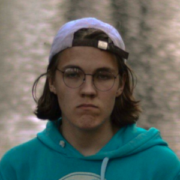
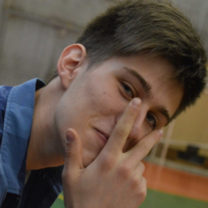
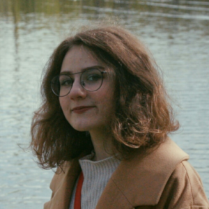
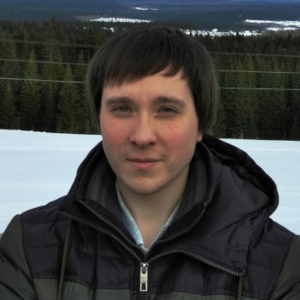

Хорошая специальность
Я поступал вовсе не наобум: радиотехникой хотел заниматься ещё лет с четырнадцати. Многие думают, что специальность скучная, а ведь именно в радиотехнике раскрывается весь инженерный потенциал человека. А в УрФУ поступил, потому что здесь учился мой преподаватель из кружка и очень советовал пойти именно сюда. Пока всё классно, только математика очень тяжёлая.
Ни дня без спорта
Я много лет занимаюсь волейболом и поступал в УрФУ именно из-за него. Нет, радиотехникой я, конечно, тоже интересуюсь, но спорт - это моя страсть. Мне мои друзья посоветовали сюда поступать. Здесь хороший спортивный комплекс, тренеры - всё, что мне нужно. Постоянно участвую в университетских соревнованиях. Учеба проходит хорошо, но свою жизнь без спорта я представить не могу.
Быть студентом - круто
Учеба идет своим чередом, а больше всего мне здесь нравится студенческая активность. Поступали вместе с подругой и совсем не жалеем о своём выборе. В первый день нам выдавали бланки на вступление в профсоюз РтФ, заполнили только ради различных плюшек вроде бесплатных билетов на поезд, а в итоге оказались во всей движухе. Мероприятия, мероприятия, мероприятия - вместе с учёбой даже не хватает времени на отдых, но я от этого искренне кайфую. Чувствую себя частью большой профсоюзной семьи (вступайте обязательно!).
Наука окрыляет и жизни смысл дает
Заканчивал УрФУ я уже довольно давно. Был как раз на радиотехнике. Мой опыт показывает, что мало с кем такое бывает, но мне очень нравилась учёба. Я показывал определённые успехи в ней, так что преподаватель курсе на третьем предложил заняться научной деятельностью. Ушёл во всё это с головой, и после обучения уже не смог расстаться ни с институтом, ни с научкой, поэтому и стал аспирантом. На радиофаке мне выделили небольшую комнату, занимаюсь микроконтроллерами и радуюсь жизни.